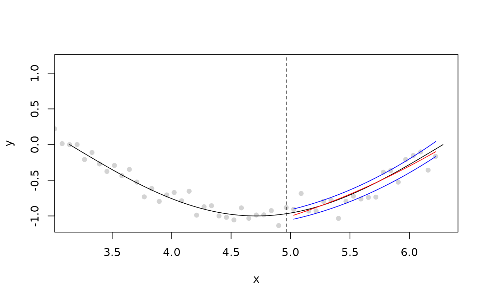
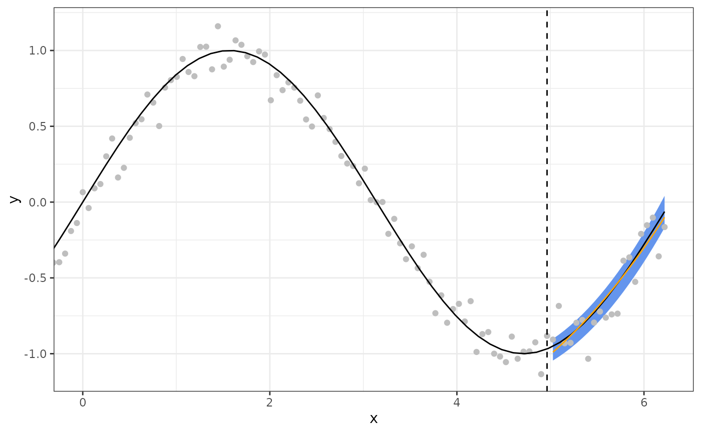

smooth_quantile_reg() generates a quantile regression model specification for
the tidymodels framework. Currently, the
only supported engine is smoothqr::smooth_qr().
Usage
smooth_quantile_reg(
mode = "regression",
engine = "smoothqr",
outcome_locations = NULL,
quantile_levels = 0.5,
degree = 3L
)Arguments
- mode
A single character string for the type of model. The only possible value for this model is "regression".
- engine
Character string naming the fitting function. Currently, only "smooth_qr" is supported.
- outcome_locations
Defaults to the vector
1:ncol(y)but if the responses are observed at a different spacing (or appear in a different order), that information should be used here. This argument will be mapped to theaheadargument ofsmoothqr::smooth_qr().- quantile_levels
A scalar or vector of values in (0, 1) to determine which quantiles to estimate (default is 0.5).
- degree
the number of polynomials used for response smoothing. Must be no more than the number of responses.
Examples
tib <- data.frame(
y1 = rnorm(100), y2 = rnorm(100), y3 = rnorm(100),
y4 = rnorm(100), y5 = rnorm(100), y6 = rnorm(100),
x1 = rnorm(100), x2 = rnorm(100)
)
qr_spec <- smooth_quantile_reg(quantile_levels = c(.2, .5, .8), outcome_locations = 1:6)
ff <- qr_spec %>% fit(cbind(y1, y2, y3, y4, y5, y6) ~ ., data = tib)
p <- predict(ff, new_data = tib)
x <- -99:99 / 100 * 2 * pi
y <- sin(x) + rnorm(length(x), sd = .1)
fd <- x[length(x) - 20]
XY <- smoothqr::lagmat(y[1:(length(y) - 20)], c(-20:20))
XY <- tibble::as_tibble(XY)
qr_spec <- smooth_quantile_reg(quantile_levels = c(.2, .5, .8), outcome_locations = 20:1)
tt <- qr_spec %>% fit_xy(x = XY[, 21:41], y = XY[, 1:20])
library(tidyr)
library(dplyr)
pl <- predict(
object = tt,
new_data = XY[max(which(complete.cases(XY[, 21:41]))), 21:41]
)
pl <- pl %>%
unnest(.pred) %>%
mutate(distn = nested_quantiles(distn)) %>%
unnest(distn) %>%
mutate(
x = x[length(x) - 20] + ahead / 100 * 2 * pi,
ahead = NULL
) %>%
pivot_wider(names_from = quantile_levels, values_from = values)
plot(x, y, pch = 16, xlim = c(pi, 2 * pi), col = "lightgrey")
curve(sin(x), add = TRUE)
abline(v = fd, lty = 2)
lines(pl$x, pl$`0.2`, col = "blue")
lines(pl$x, pl$`0.8`, col = "blue")
lines(pl$x, pl$`0.5`, col = "red")

if (require("ggplot2")) {
ggplot(data.frame(x = x, y = y), aes(x)) +
geom_ribbon(data = pl, aes(ymin = `0.2`, ymax = `0.8`), fill = "lightblue") +
geom_point(aes(y = y), colour = "grey") + # observed data
geom_function(fun = sin, colour = "black") + # truth
geom_vline(xintercept = fd, linetype = "dashed") + # end of training data
geom_line(data = pl, aes(y = `0.5`), colour = "red") + # median prediction
theme_bw() +
coord_cartesian(xlim = c(0, NA)) +
ylab("y")
}
